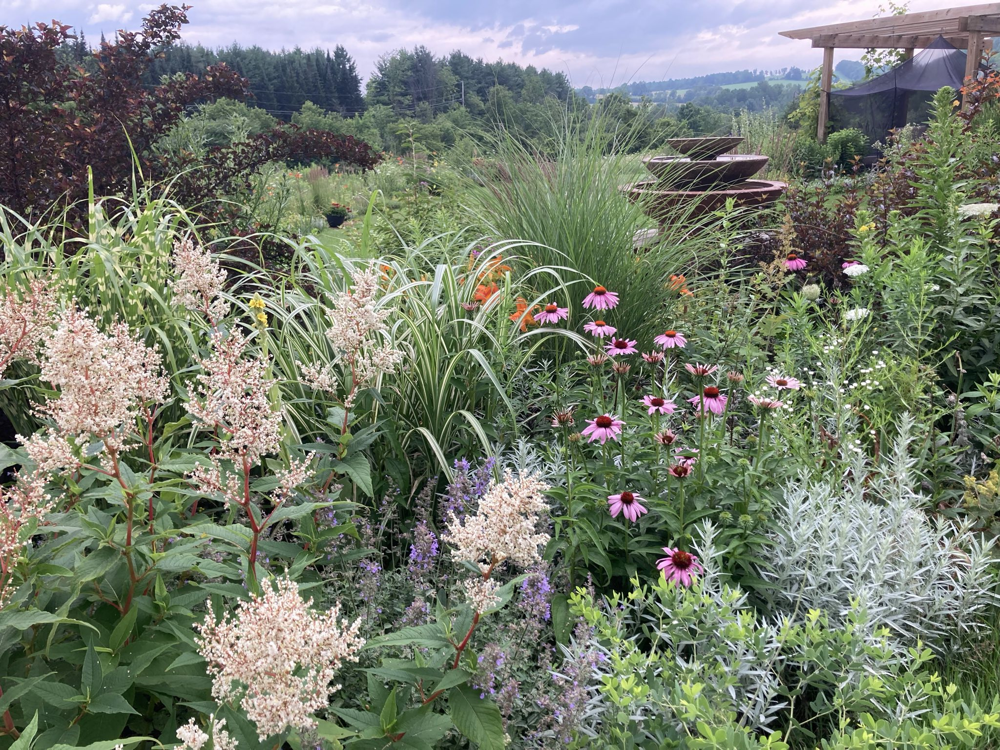
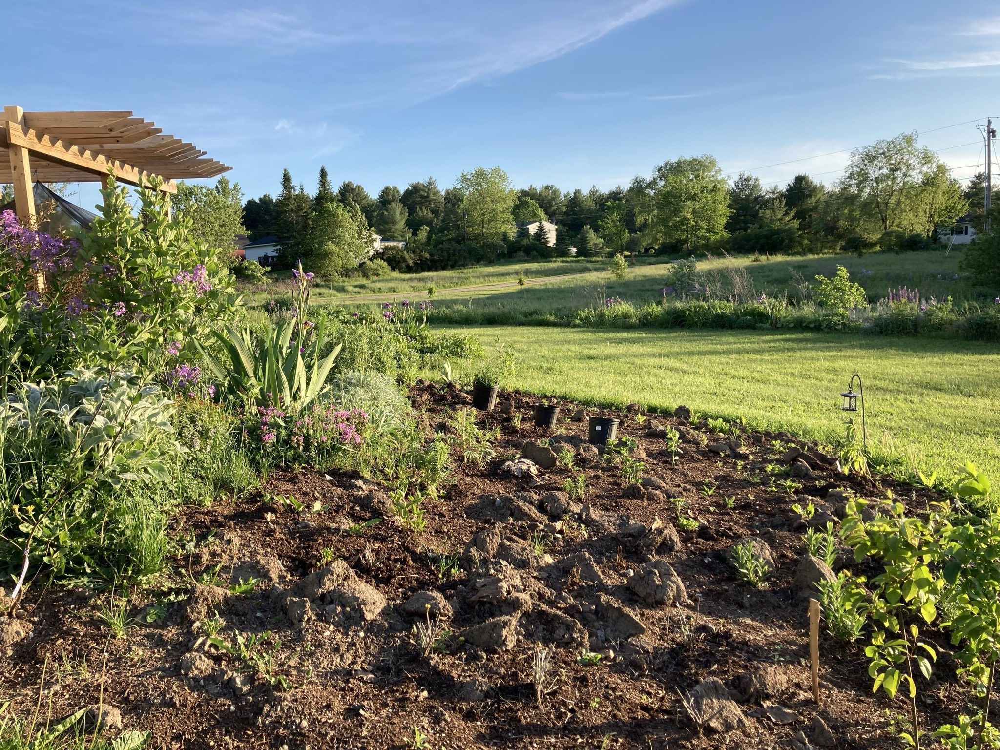
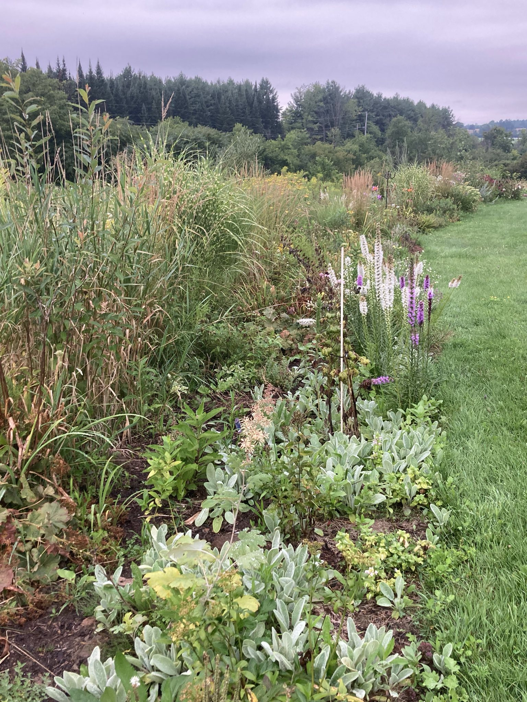
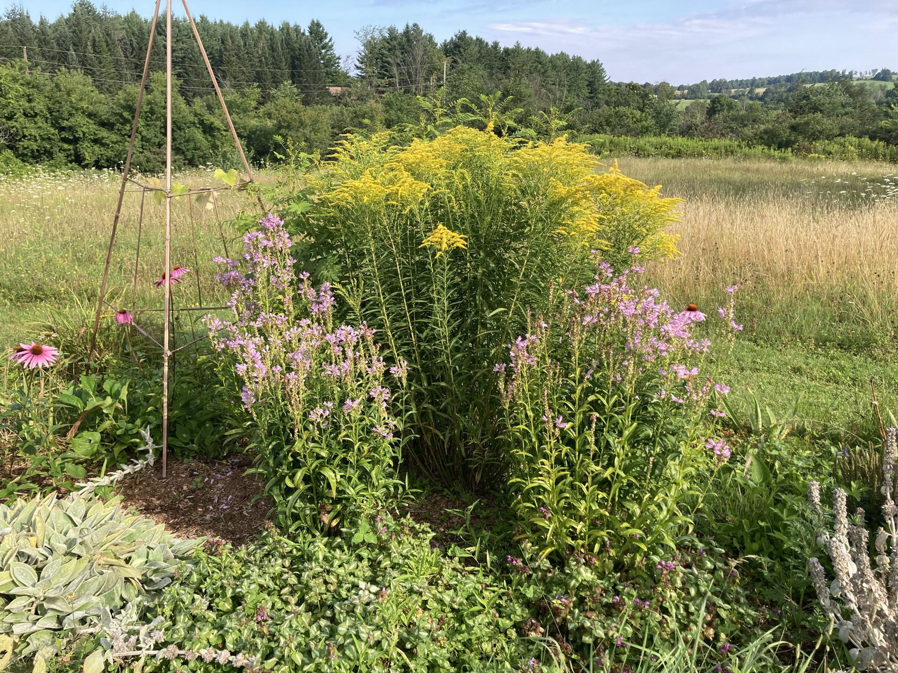
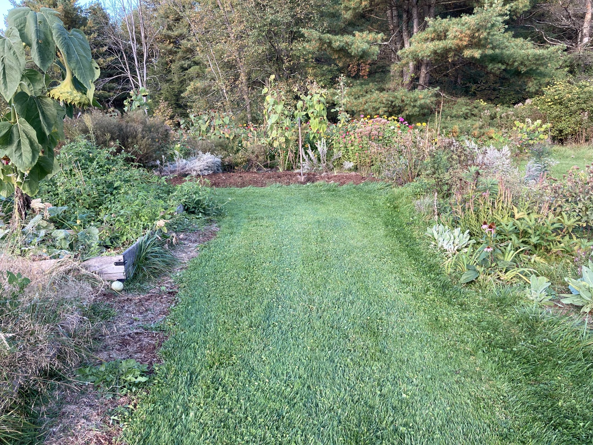
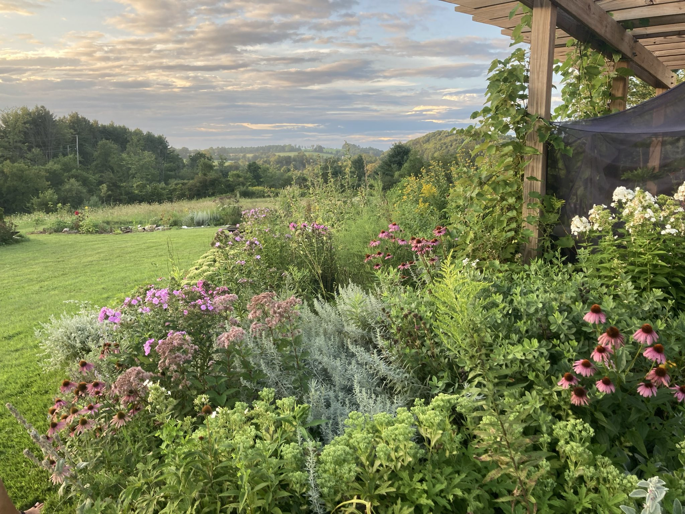

February 2022
A Few Garden Reflections

Our garden is never complete, always changing, and in constant need of upkeep. I say this as I put in orders for more and more plants. This obsession is driven by the wildlife visitors who benefit from the many host plants, woody perennials, and trees that we have established over the past eight years. It also helps to have friends and family come over and walk the property. Whenever a friend visits, they will likely come home with a few plants. Despite any complaints I have, I must admit, I love this garden. There is nothing better than spending a day with my hands in soil, discovering self-sown plants, dividing and moving perennials, seeing the growth of perennials as they age, discovering a variety of butterfly or moth that hasn’t visited before, and then there is all the beauty! I love this garden and (not to be too dramatic about this) someone may have to bury me here.
The garden project here began with a vision of encircling the house with gardens, a vision which did (finally) manifest in 2022. We started with small plots of plants scattered under trees and plantings to serve specific purposes like hiding utilities. The expansion took time, money, and energy. Fortunately, the native plants and most perennials we selected don’t ask much. I have never used chemical fertilizer or poisons. Water has occasionally been an issue with the sheer quantity of plants placed in a season, however even that has become easier with the use of rain barrels and time. Most of our perennials don’t require regular watering now that they have been established.


When I think about the practices that have worked, the lasagna method for establishing perennials beds made the biggest impact. For years, I pulled grass up with my hands. I carefully cut out pieces of lawn with a shovel and pealed back grass like removing a carpet. Flinging grass rolls and oddly shaped patches of lawn into the surrounding woods, I would add aged horse manure to a “clean slate.” Not wanting to leave a barren patch of land, I would plant perennials and seeds immediately along with heaping handfuls of mulch. Now things are much different, I take cardboard boxes and weigh them down with bricks. Laying the boxes out in the yard, I pile up aged manure on top. Sometimes the boxes sit for a bit leaving the yard looking a bit disheveled. Over time I dump manure onto the cardboard, just using a shovel and pulling a cart. Sometimes I lay put down thick piles, more often it’s just an inch or two. Then I wait. I wait for a few months, sometimes the whole of winter before planting. Honestly, this method makes me feel like a bit of a lazy gardener. Then I take a walk around the yard and I remember, that this kind of work isn’t done overnight. I have made something that has taken years and it’s okay to move a little more slowly and carefully.

Now that there is so much established in my garden I can look back on the many mistakes that have been made with a little humor. Our first vegetable garden was a wet disaster that produced only a handful of tomatoes. Planting a veg garden in heavy clay is asking too much of plants that need well-drained soil to produce fruit. I remember getting my boot stuck in the mud and that awful suction cup sound it makes when trying to pull it out. Several years back, when I was pulling up grass by hand, I remember feeling so frustrated finding tire bits buried in the yard by the former property owner that I cursed his name out loud, why did he have to put so much dirty fill in the yard? I’ve watched as young small trees got devoured by mice and deer picked away at the remaining leaves of struggling pear trees. Oh, let’s also not forget the curse of the invasive plants! There was/is so much poison parsnip, bishop’s weed, and the honeysuckle. Do I have some choice words for those plants! Saying all of this has made me feel so tired! Back to the good stuff…

Now in 2022, the dragonflies will hopefully dance across open meadow, the fringe trees will show off their white frills, and the oaks may actually start producing some acorns. We have a large collection endangered and rare plants, host plants, early spring blooming bulbs that will hopefully be more prolific and provide some babies for transplanting. There are also hundreds of plants who should be looking forward to a new home in our garden beds including 45 trees, 55 herbaceous perennials, and many native plant plugs. This garden has been and will continue to be a labor of love. I am already looking forward to enjoying a cocktail in the garden surrounded by butterflies.
One great addition this spring will be our new metal raised garden beds. The plan is to convert our falling apart cedar beds into borders for a selection of cut flower beds, low bush blueberries, raspberries, and perhaps some hardy roses.

Filed in the garden journal · February 2022